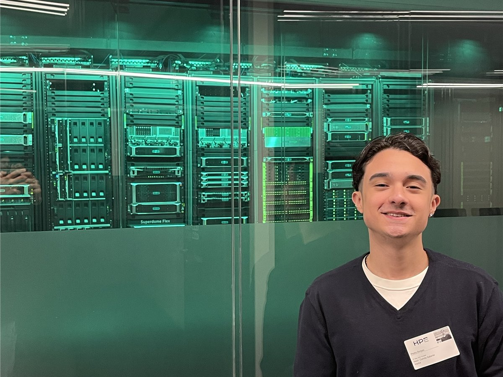
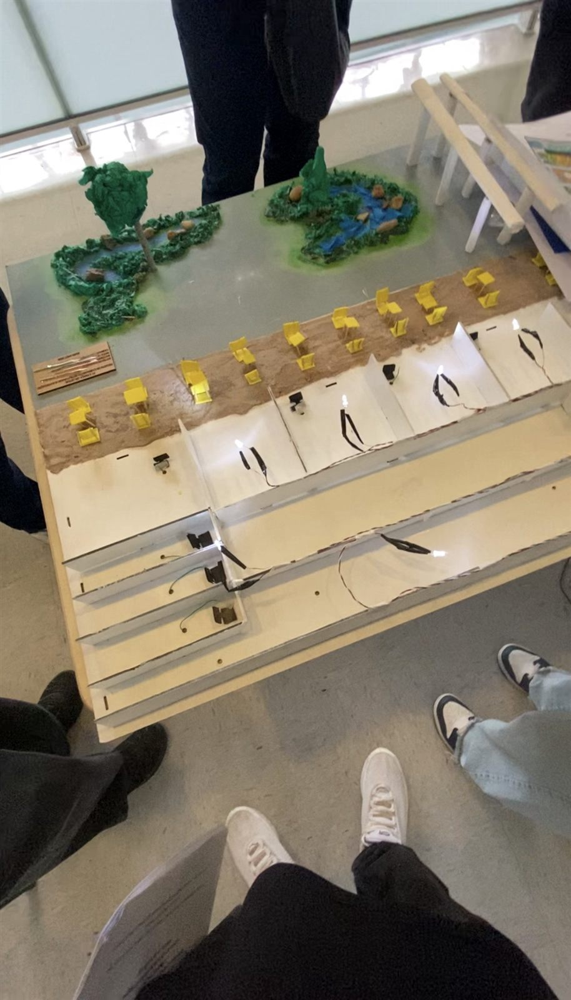

Com a turma
Um dos registros com os colegas durante o curso.
Registro visual
Visitas, projetos e experiências em grupo.
Um dos registros com os colegas durante o curso.

Vi servidores de perto.

Visita técnica do 3º ano. A imagem é ilustrativa.

Projeto em grupo com montagem e circuito.

Simulação feita em Ciências Humanas. A imagem é uma pintura da época.

Apresentação de dança registrada em memorial.
As imagens ilustrativas têm licença livre e estão na página Créditos das imagens.